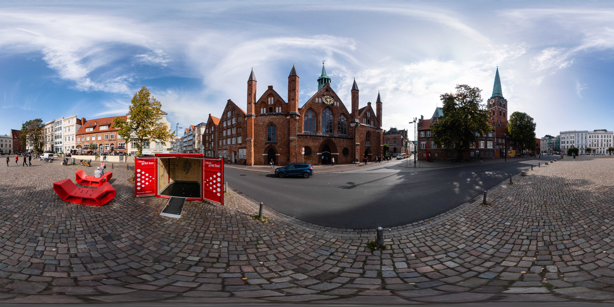

<!DOCTYPE html>
<html lang="en">
  <head>
    <meta charset="UTF-8" />
    <!-- <meta http-equiv="X-UA-Compatible" content="IE=edge" /> -->
    <meta name="viewport" content="width=device-width, initial-scale=1.0" />
    <script src="https://aframe.io/releases/1.2.0/aframe.min.js"></script>
    <title>Document</title>
  </head>

  <body>
    <!-- a-scene 基本虛擬空間-->
    <a-scene background="color: black">
      <!-- 基本資源設置統一管理：可以處理快取-->
      <a-assets>
        <!--  -->
        <!--  -->
        <!-- 
            preload：先下載
            autoplay : 自動播放
            loop : 影片重複 
        -->
        <video id="video" autoplay src="assets/Ayutthaya.mp4"></video>
      </a-assets>

      <!-- 建置場景 -->
      <!-- 場景：天空  / arc 360貼在 src裡-->
      <!-- <a-sky src="#park"></a-sky> -->
      <!-- 場景：天空  / arc 360貼在 src裡-->
      <a-videosphere src="#video"></a-videosphere>
    </a-scene>
  </body>
</html>
